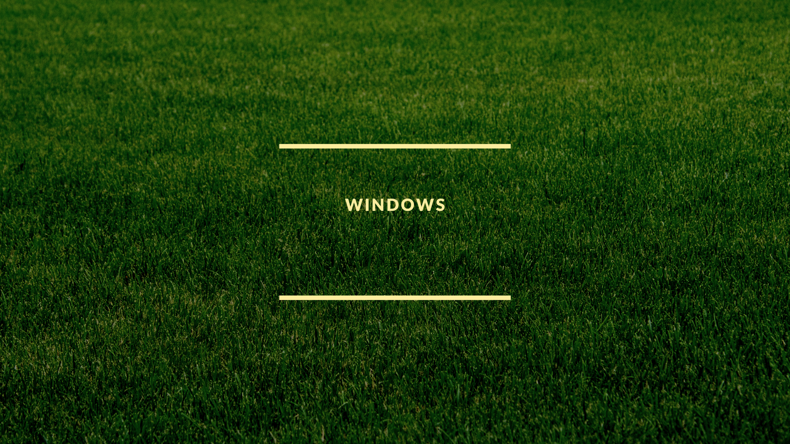
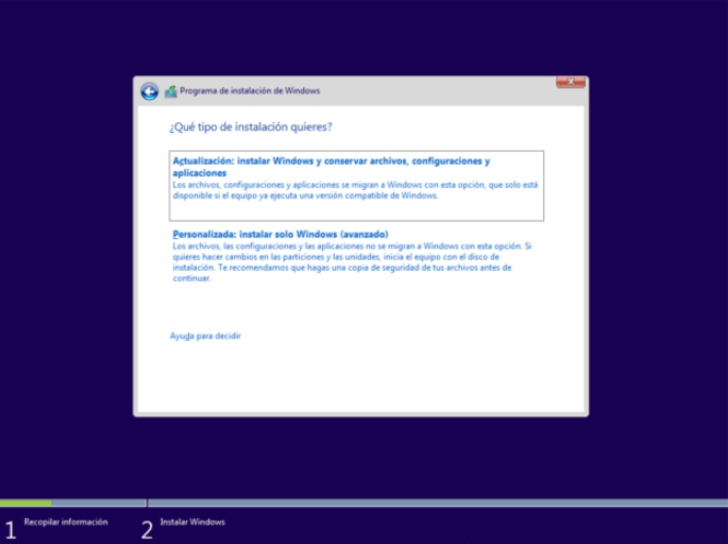

O Windows é um sistema operacional de multitarefas para computadores e dispositivos móveis, desenvolvido pela Microsoft. Ele é responsável por gerir e executar processos em computadores pessoais e empresariais de todo o mundo. O Windows é um sistema operativo que permite administrar os recursos de um computador. Ele é de interface gráfica multitarefa, o que significa que podemos trabalhar com vários programas simultaneamente. O Windows começou a ser projetado em 1981.
Veja como instalar o Windows 10 passo a passo
Queríamos criar um guia o mais genérico possível para você com uma série de etapas que,
dependendo do seu caso, você deve seguir desde o início ou pode pular algumas etapas
conforme indicado. Antes de começar, gostaria de ter certeza de que seu computador
suporta Windows 10, ou seja, que atenda aos requisitos mínimos recomendados pela Microsoft.
Se você já usou o Windows 10 naquele computador anteriormente, não haverá problema, mas se
for a primeira vez, certifique-se de ter pelo menos:
Se você o hardware atende a essas especificações, continue lendo nosso guia:
A primeira coisa que você deve se perguntar é se é uma equipe de marca ou um clone que
você montou em uma loja especializada ou que você mesmo montou. Isso é importante porque
no caso de computadores de marca, tanto desktops quanto laptops (ASUS, Acer, Lenovo,
HP, MSI, etc.), eles geralmente têm uma partição especial que vem com o sistema operacional
Windows para restaurar o computador como saiu da fábrica.
Caso o sistema operacional que acompanha o equipamento seja Windows 10 e não outra versão, e quisermos reinstalá-lo ou restaurá-lo para a forma como ele veio quando o compramos, podemos pular as etapas 2, 3, 4 e 5, como veremos. Isso porque quando iniciamos o equipamento da marca, podemos usar uma combinação de teclas para entrar no menu de restauração.
A partir daí, seremos questionados sobre o que queremos fazer, sim restaurar a versão atual do Windows 10 ou se quisermos retirar todos os dados e restauramos o equipamento do zero, ou seja, para que permaneça como no primeiro dia em que o adquirimos. Lembre-se de que a primeira opção irá manter seus arquivos e configurações, enquanto a segunda irá excluí-los (não se esqueça de fazer backups ou cópias de backup se precisar ou irá perdê-los).
Para iniciar o procedimento de instalação de um novo sistema operacional Windows 10, podemos revisar o manual de usuário da equipe da nossa marca, se ainda a tivermos. Caso não o tenha, na página do fabricante encontraremos as informações e até mesmo o manual para download em PDF. Você também pode ir a fóruns e outros blogs que explicam isso.
sim não alteramos as partições que vieram da fábrica e o sistema de restauração e a imagem do Windows que vem no computador estiverem intactos, podemos seguir os próximos passos. Aqui vou explicar o procedimento para as marcas mais populares:
Uma vez o modo de recuperação da nossa equipe, o procedimento é o mesmo para todos. Ele nos mostrará uma mensagem «Aguarde».
Ele nos pede para escolher uma opção, e devemos selecionar «Solucionar problemas”.
Depois disso, clique em «Reiniciar computador”.
E, finalmente, duas opções aparecem, uma é manter seus arquivos e configurações e a outra «Deletar tudo”. Para uma nova instalação, devemos selecionar aquela segunda para deletar tudo.
Agora, pule para a etapa 5 do nosso guia para continuar a partir daí, pois o próximo é o menu de instalação.
Eles são portáteis ou de mesa, o procedimento geralmente é semelhante. No caso de ter outra marca ou o procedimento que explico não funcionar, consulte a página oficial diretamente para o seu modelo exato.
Por certo, existe outro jeito desde o início do Windows para iniciar neste modo, mas acho que isso é mais fácil e também permite iniciar o modo de recuperação mesmo que nossa instalação anterior esteja danificada e não inicie o sistema …
sim nossa equipe não tinha uma instalação anterior do Windows 10 ou não é uma equipe de marca e queremos instalá-lo do zero, neste caso, podemos já ter um meio de instalação que compramos anteriormente (pendrive ou um DVD) com o sistema operacional Windows 10 pronto para instalar.
Sim já nós temos um meio de instalação, vamos para o passo 3 … Caso contrário, siga os seguintes passos (2).
Se não, teremos que prepare nosso meio de instalação anteriormente. Para isso, podemos escolher entre duas opções diferentes:
Para conseguir uma cópia legal do Windows 10, você pode comprá-lo em qualquer loja de informática nas diferentes edições disponíveis: Home, Pro, Server, etc. Você também pode baixar uma ISO diretamente do site da Microsoft se já tiver uma licença ou comprar essa licença. Download - https://www.microsoft.com/es-es/store/b/windows
Deste área de download, você pode selecionar a edição desejada e comprar um pendrive (pelo menos 8GB) com o sistema de instalação do Windows 10 ou baixar diretamente o ISO para gravá-lo em um pendrive ou DVD.
Depois de obter o Imagem ISO do Windows 10, você pode escolher diferentes opções ou programas para criar o USB ou DVD inicializável. Para DVDs, temos programas como o Nero e alternativas semelhantes.
Em vez disso, para criar o USB inicializável Com o Windows 10 podemos escolher Unetbootin, Yumi, etc., onde podemos selecionar a localização da imagem ISO baixada em nosso computador, e a partir daí teremos um menu gráfico intuitivo a seguir para gerar nossa mídia USB para a instalação do Windows.
Eu te aconselho isso ferramentajá que integra tudo, começando com o download do Windows 10 ISO adequado, até a criação da mídia de instalação.
Baixar Rufus – https://go.microsoft.com/fwlink/?LinkId=691209
Assim que tivermos a ferramenta baixada, podemos executar o Rufus .exe para iniciar o assistente e seguir as etapas:
1.O que você gostaria de fazer? É a primeira pergunta que nos é feita, no nosso caso selecionamos a opção «Criar mídia de instalação» e clicamos em Avançar.
2.Selecionamos os dados de idioma, edição do Windows 10 que desejamos e arquitetura. Se você não conhece bem, pode selecionar a opção «Usar as opções recomendadas para este computador» e o sistema irá detectá-las automaticamente mesmo que você não tenha preenchido os campos. Próximo.
3.Nós escolhemos o Tipo de mídia queremos para a instalação, um stick USB ou um ISO para DVD. Próximo.
Não se preocupe se o processo parece levar também ou fica congelado em algum ponto, geralmente acontece em alguns casos! Espere um tempo razoável antes de forçar o desligamento.
Agora vamos esperar que o processo termine e faremos o que assistente para gerar nosso meio de instalação. Assim que terminar, o teremos pronto para pular para a etapa 3.

Se você já tem nosso meio de instalação e não optar pelo Recovery Mode de um computador de marca, devemos inserir o DVD com nosso sistema de instalação gerado no passo anterior ou o pendrive USB na porta de nosso equipamento.
Ao inicie o equipamento (Se já foi iniciado, reiniciaremos para poder acessar o menu), devemos entrar em nossa BIOS / UEFI para que dê prioridade ao meio de instalação que escolhemos, portanto, devemos colocar o USB ou leitor de DVD como principal no menu para a instalação pode começar.
Para entrar, assim que você iniciar e mostrar o logotipo inicial, comece pressionando a tecla apropriada várias vezes até entrar no menu principal do seu BIOS ou UEFI. Esta chave pode variar dependendo da marca do computador ou placa-mãe, mas geralmente é Del, ou Esc, ou F2, ou F9, …
Lembre-se que alguns teclados, nas teclas F1-F12 têm várias funções, e para ativar as teclas de função você precisa pressionar juntas a tecla Fn que aparecerá no seu teclado! É um erro muito comum de alguns iniciantes …
Você pode verificar no manual da sua placa mãe com exatidão. Caso não o tenha, acesse o site oficial do fabricante da placa-mãe ou do equipamento e faça o download em PDF. Você também pode consultar a ajuda do mesmo fabricante …
Uma vez lá dentro, também podemos ver diferentes cardápios dependendo se é um BIOS de uma marca ou outra, e se é um UEFI. Normalmente, no AMI, Award e Phoenix modernos, você precisará navegar até a guia Boot ou Boot Priority do menu usando as teclas de seta do teclado.
No caso de UEFI, você provavelmente tem uma interface gráfica mais intuitiva traduzida para o seu idioma, na qual pode usar o mouse. Nesta interface, você também pode selecionar a opção Boot e dentro de você pode selecionar a mídia apropriada.
Seja BIOS ou UEFI, dentro Inicialize, selecione a unidade USB ou o DVD (ou CD-ROM) como a mídia primária, ou seja, na mídia onde o firmware procurará primeiro o sistema operacional ou a mídia para instalar quando o computador for inicializado. As opções, mais uma vez, variam dependendo do fabricante do firmware, mas geralmente é o primeiro dispositivo de inicialização, ou controle de dispositivo de inicialização ou opção de inicialização nº 1, etc.
Assim que pudermos selecionar a mídia de instalação que preparamos como a mídia primária, pressionamos F10 e sairemos do BIOS / UEFI salvando as alterações. o computador irá reiniciar novamente e deve reconhecer a mídia de instalação, iniciando o menu para iniciar a instalação.
Preste atenção na tela, pois poderá ver a mensagem “Pressione uma tecla para começar …”E você deve pressionar qualquer tecla no teclado para começar.
Se você usou a opção Modo de recuperação, você não terá que fazer nada, o software do computador fará tudo enquanto é exibida uma barra de processo na tela. Por ter as configurações já pré-definidas e as partições já pré-estabelecidas pelo fabricante, o sistema saberá o que fazer e irá deletar, gerar as unidades que temos e irá formatá-las.
Uma janela provavelmente aparecerá lembrando-nos de que os dados serão excluídos, se nós fizemos backup ou não queremos mantê-los, aceitamos e continuaremos …
No caso de termos criado por conta própria o meio de instalação, seguiremos as seguintes etapas:
1-A primeira coisa que nos é mostrada é o menu onde escolher o idioma e formato de hora ou teclado. Escolhemos o espanhol em todos os casos, embora provavelmente já esteja selecionado automaticamente. Seguimos para a próxima etapa …
3-sim a chave Não é gravado no firmware BIOS / UEFI OEM, pois em muitos computadores de marcas, a próxima tela solicitará que digitemos a Chave ou o Serial de nossa licença. Nós inserimos nossa chave para ativar uma cópia legal do Windows e continuar. Caso ainda não tenha, clique na opção «Não tenho a chave do produto» para obtê-la.
4-Depois é mostrado o menu onde selecione a edição queremos instalar. Deve corresponder à versão da senha que adquirimos, caso contrário não será ativada. Escolha Home, Pro ou Education, dependendo do seu caso e clique em Next.

5-Mostra-nos duas outras opções. A primeira «atualização» é no caso de querermos atualizar uma versão do Windows que instalamos ou de ir para uma edição diferente do Windows 10. Mas, no nosso caso, clicamos na segunda opção «Personalizado”.
Depois de fazer isso, nós vamos para a próxima etapa…
Agora é a hora de formate o disco rígido. Lembre-se de que se você usou o Modo de Recuperação, também pode pular esta etapa, pois isso será feito automaticamente e iniciará a área de trabalho diretamente no final do processo, sem que tenhamos que intervir. Ou seja, é uma instalação autônoma.
Porém, caso tenhamos nosso próprio meio de instalação, seguido pelas telas mostradas na etapa 4, receberemos a tela onde podemos selecionar as opções para excluir, criar e formatar partições do nosso disco rígido.
Nesta tela, será mostrada uma lista com múltiplas partições se tínhamos um sistema anterior instalado ou um espaço vazio se é um equipamento novo. Nesse caso, podemos seguir os dois caminhos a seguir:
Se você quiser criar partição para dados ou alocá-lo para outro SO ou o que quer que seja, você pode modificar o tamanho do novo gerado de forma a não ocupar todo o disco rígido e usar a opção Estender do menu, embora seja mais para usuários mais experientes.
Você pode selecionar os existentes um por um e clicar para excluir e, uma vez excluído, use a opção «Novo”Para que o sistema crie as partições necessárias. Uma vez criado, você pode selecioná-lo e dar Formato para dar-lhe um formato, eliminando tudo o que existia nele.
Assim que tivermos as partições necessárias, Podemos clicar em Avançar e o processo de formatação e geração das novas unidades terá início. Após este processo, tudo o que é necessário para instalar o sistema operacional começará a ser copiado da mídia de instalação e quando o processo for finalizado, o sistema estará pronto para a primeira inicialização.
Se tudo tiver corrido corretamente, vai reiniciar uma vez (Aqui não devemos pressionar nenhuma tecla para iniciar o meio de instalação, apenas sair de seu curso) e veremos uma tela de carregamento para preparar a configuração para a primeira inicialização do sistema.
A próxima coisa veremos será um assistente guiado com opções diferentes configuração. Se você não for um usuário experiente, use as Configurações rápidas neles e continue até ver sua área de trabalho pela primeira vez. Ele também solicitará seu nome de usuário, senha de sessão e e-mail para associar ao sistema.
Após seguir a etapa 5, estaremos dentro da mesa pela primeira vez após a instalação e podemos começar a colocar papéis de parede, personalizar a aparência se quisermos, etc. Mas eu recomendo que se algum componente de hardware não funcionar, instale os drivers correspondentes.
Você pode tê-los em um CD que veio com o dito hardware no momento da compra ou no CD / DVD do equipamento, se for de marca. Embora, em geral, o Windows já os tenha detectado e instalado o driver correto.
Mas eu recomendo que você preste atenção especial a os motoristas oficiais da sua placa gráfica, pois neste caso terá que instalar o software adequado. AMD Catalyst / Crimson para ATI / AMD, Intel HD Graphics ou NVIDIA.
Verifique também se o som funciona corretamente, webcam, bluetooth, impressora, se houver, e outro hardware adicional que pode não ter sido detectado corretamente durante a instalação e requer a instalação manual do driver. Se precisar, instale esses drivers oficiais.
Termino dizendo que se você não tem CD / DVDs com drivers, você pode encontrá-los para baixar gratuitamente no site oficial do fabricante do seu equipamento, selecionando o modelo adequado, ou no site oficial do referido componente (placa gráfica, som, impressora, …).
Já temos o sistema operacional funcionando e todo o hardware funcionando corretamente graças aos drivers. Nesse momento será quando chegarmos mãos à obra para instalar todo o software que precisamos para o nosso trabalho ou diversão diária (Office, videogames, navegador, compressor, …). Mas eu recomendo que você comece com um bom antivírus.
Em nosso guia, não falamos sobre cópias piratas de Microsoft Windows 10, por lo que si has optado (bajo tu responsabilidad) por una copia ilegal, debes saber que tendrás que realizar procesos adicionales para instalar cracks o activadores para que tu copia rece como “alegal” y no sea desactivada pasado el proceso de prova.
Agora você tem tudo pronto para desfrutar!